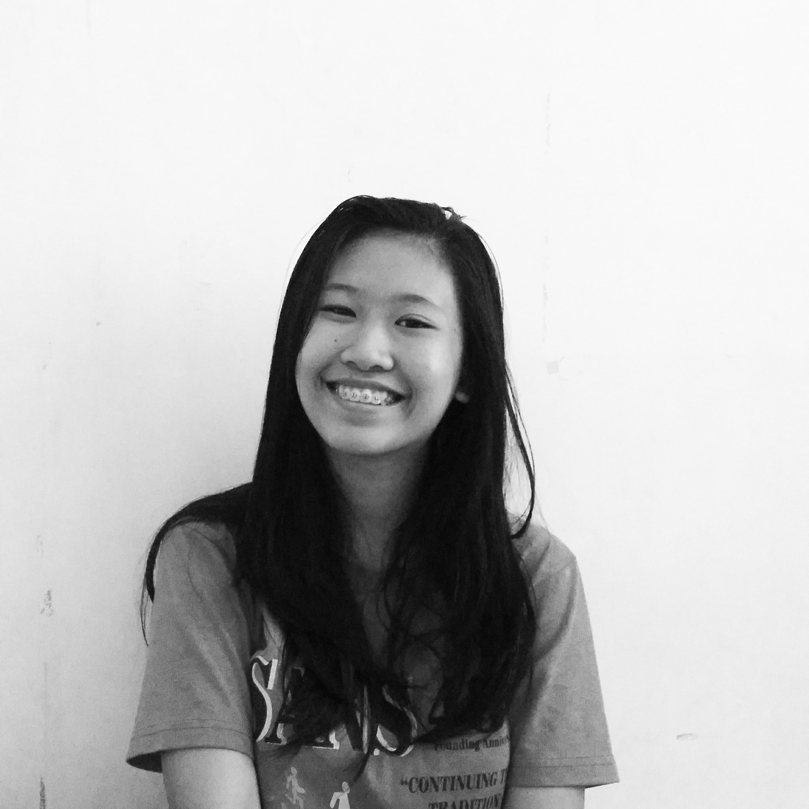

Contact Me:
Contact No: 09167102299
E-mail: ivsablay@up.edu.ph
Social Accounts
Facebook
Twitter
BASIC INFORMATION
Name: Idelle Valderrama Sablay
Address: 161 Benilda St. Victory Heights, Novaliches, Caloocan City
Age: 17 years old
Date of birth: October 28, 1999
Place of birth: Manila
Nationality: Filipino
Sex: Female
EDUCATION
Kinder: Victory Day Care Center
Elementary: St. Anthony Nova School (2005-2011
Highschool: St. Anthony Nova School (2011-2015)
College: University of the Philippines (2015-present)
EXPERIENCE
2015-2016: Discvorey Club President
LibSpeak 2016 (Co-organizer)
LibSpeak 2017 (Co-organizer)
2015-2016: UP Future Library and Information Professionals of the Philippines (Internal Affairs Member)
2016-2017: UP Future Library and Information Professionals of the Philippines (Secretary)
2017-present: UP Future Library and Information Professionals of the Philippines (Program Management Head)
ACHIEVEMENTS
Highschool : Outsanding Visions Staffer
College: College Scholar (First Sem A.Y. 2015-2016)
SKILLS
Basic French Skills
Basic Pubmat Skills
Communication Skills
Microsoft Word and Excel Skills